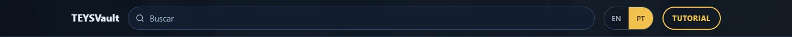
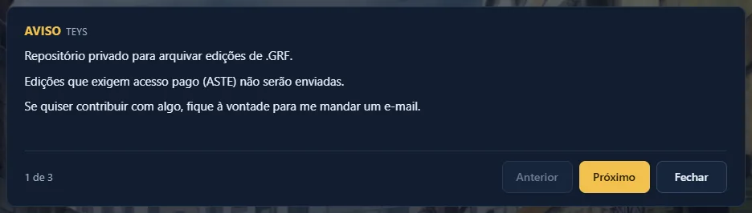

Escolha o idioma
No canto superior direito ficam os botões EN e PT. O idioma escolhido fica salvo para a próxima visita.

Leia o aviso
A caixa AVISO tem 3 páginas. Use Próximo e Anterior para passar. Ela explica como instalar as edições (passo 8).
Fechar esconde a caixa. Para ver de novo, clique em Mostrar aviso.

Navegue pelas categorias
A barra da esquerda lista todas as categorias: Utilitários, Edições de Mapas, Efeitos, Diversos, Cartas grandes e Cursores.
Clique em uma categoria para pular direto para ela. O número ao lado mostra quantas edições existem ali.
As subcategorias (Músicas, Pneuma, Armadilhas…) aparecem embaixo da categoria principal.

Busque uma edição
Digite no campo Buscar. A lista filtra enquanto você digita, em português ou inglês.
- Atalho: aperte / para ir direto para a busca.
- Aperte Esc para limpar a busca.
- Nada apareceu? Tente uma palavra mais curta, como “cursor” ou “mapa”.

Selecione as edições
Clique em um card para selecionar. Ele ganha borda dourada. Clique de novo para desmarcar.
Você pode selecionar várias edições de categorias diferentes. Todas vão para o mesmo download.

Itens de “só um”
Algumas edições trocam o mesmo arquivo do jogo, então só dá para usar uma de cada vez. Exemplos: cursores, Quagmire, estilos de mapa, Cartas de Tarô.
Ao escolher uma, a anterior do mesmo grupo é desmarcada sozinha. As outras opções do grupo ficam prateadas.

Baixe o arquivo
Clique em Baixar selecionados. O número mostra quantas edições estão marcadas.
O site junta tudo em um único arquivo: teysvault.grf.
Cancelar desmarca tudo de uma vez.

Instale no jogo
Opção A — GRF Editor (junta a edição dentro do data.grf):
- Abra o GRF Editor.
- Clique em EDIT e depois em MERGE.
- Em OLDER GRF, escolha o
data.grfdo jogo. - Em NEWER GRF, escolha o
teysvault.grf. - Clique em MERGE.
Opção B — data.ini (servidores privados): copie o teysvault.grf para a pasta do jogo e coloque ele como 0= no data.ini. Os outros descem uma posição.
Antes
[Data] 0=PrivateServerName.grf 1=data.grf
Depois
[Data] 0=teysvault.grf 1=PrivateServerName.grf 2=data.grf
data.grf antes do merge. Assim dá para voltar atrás.